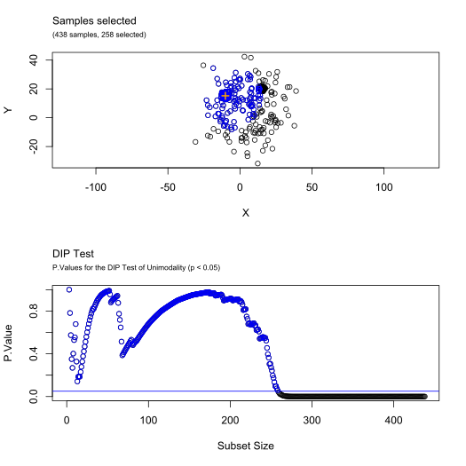
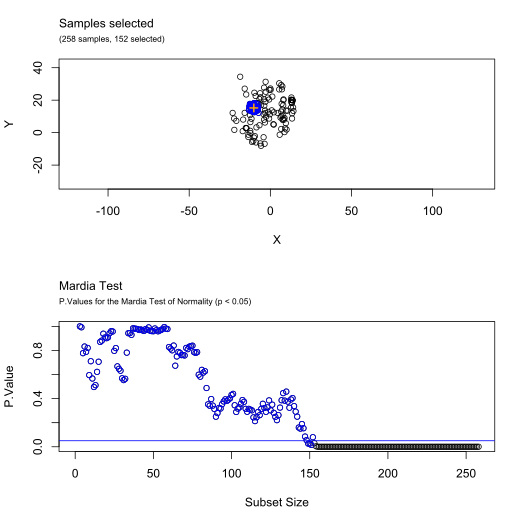

Plot method for BRIL objects
# S3 method for BRIL plot( x, contents = "plot", showClusters = TRUE, showMode = TRUE, col, colMode, colClusters = NULL, iterationsIndices = NULL, iterationsOptions = NULL, ... )
| x | An object of class |
|---|---|
| contents | Contents to be displayed, options are "scatterplot", or "iterations" (only one option possible) |
| showClusters | Logical value used when |
| showMode | Logical value used when |
| col | Default color of samples |
| colMode | Color of the mode when |
| colClusters | List (or array) of colors for each of the
clusters/iterations (length must be at least equal to the number of
groups identified by the function |
| iterationsIndices | Numerical value or array of numerical values, used
when |
| iterationsOptions | List of additional parameters to be passed to the
|
| ... | Other arguments passed to or from other methods (such as pch for the symbols, main and sub for title and subtitle, xlab, xmin, ...) |
# Create a sample distribution and run bril() function XY <- rbind( mvtnorm::rmvnorm(300, c(0, 0), diag(2) * 3 - 1), mvtnorm::rmvnorm(100, c(15, 20), diag(2)), mvtnorm::rmvnorm(150, c(-10, 15), diag(2) * 2 - 0.5), mvtnorm::rmvnorm(200, c(5, 5), diag(2) * 200) ) res <- bril(XY, debug = TRUE) # Plot the mode and groups encountered (default) plot(res)# Plot the mode only (with extra graphic options) plot(res, showClusters = FALSE, main = "Multivariate Mode Estimate", col = "blue", colMode = "black", asp = 1, pch = 3 )# Plot the clusters without the mode plot(res, showMode = FALSE, col = "gray", colClusters = c("yellow","cyan","purple","red"))# Plot the second iteration (with arguments to plot.BRIL.filtering()) plot(res, contents = "iteration", iterationsIndices = 2, iterationsOptions = list( contents = c("scatterplot", "p.values"), colSelection = "blue", mfrow = c(2,1), asp = 1))if (FALSE) { # Plot all iterations (interactive mode) plot(res, contents = "iterations") # Plot the 3 first iterations with options (interactive mode) plot(res, contents = "iterations", iterationsIndices = c(1:3), iterationsOptions = list( contents = c("scatterplot"), xlim = c(-50,50), ylim = c(-30,30), asp = 1)) }